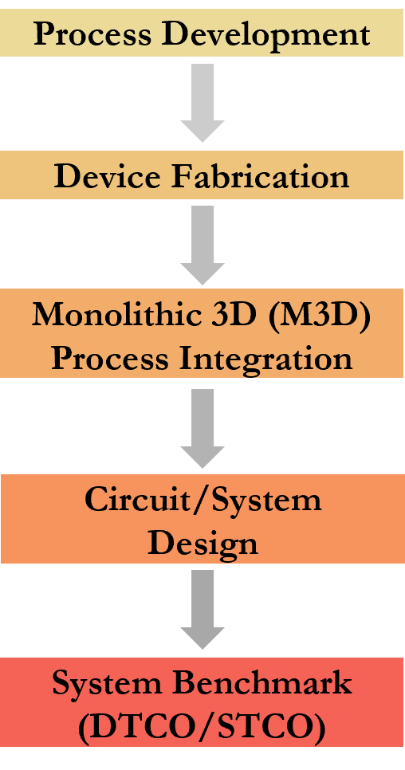
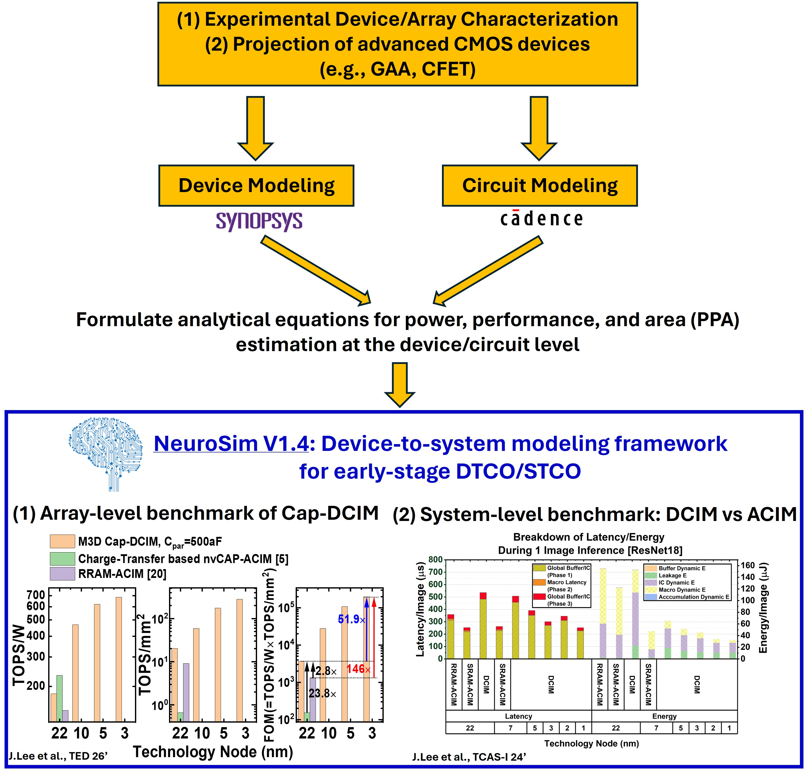

Semiconductor device researcher driving fabrication-to-system co-optimization for next-generation memory and AI hardware development.
I develop oxide-semiconductor and hafnia-based ferroelectric devices — from ALD thin-film process
through monolithic 3D integration on foundry CMOS — and connect them to circuit and system design
through DTCO/STCO benchmarking. This work has produced BEOL-compatible non-volatile capacitive
memories demonstrated on TSMC 40 nm silicon, and NeuroSim V1.4, a chip-level benchmarking
framework adopted across the compute-in-memory research community.
Currently a Ph.D Student at Georgia Tech & Device Engineer / Data Scientist Intern at Intel Corporation (Logic Technology Development)

Figure pendingassets/images/hero-device-stack.jpg
01 / About
About
I am a Ph.D. candidate in Electrical and Computer Engineering (minor in Physics) at the
Georgia Institute of Technology (Georgia Tech), advised by Prof. Shimeng Yu and supported
as an SRC Research Scholar. Before joining Georgia Tech, I completed my B.S in Electrical and Computer Engineering at Seoul National University, advised by Prof. Jong-Ho Lee and Prof. Sangbum Kim during my undergraduate research internships. My research has focused on bridging semiconductor process (foundry technology) development and
system-level hardware design: I fabricate emerging oxide-semiconductor (ALD W-doped In2O3) and ferroelectric (HfxZr1-xO2) devices, integrate them monolithically onto foundry CMOS, and systematically evaluate their impact at the
circuit and system level.
Most memory and AI-hardware proposals stop at the device, or start from the circuit/architecture
while device is treated as an abstraction. I work across both ends — building the physical
devices through hands-on device fabrication, then systematically modeling how they behave once integrated into compute-in-memory and
3D-stacked systems. This process-to-system view is what I bring to research
and industry collaboration, and it is the throughline connecting my publications, from
cleanroom fabrication to chip-level benchmarking.
4th-year Ph.D. StudentSRC Research ScholarAdvisor: Prof. Shimeng Yu29 publications · 13 as first / co-first author
02 / Research
Process → Device → Integration → Circuit → System
Research
I have established a process-to-system research flow, spanning hands-on ALD thin-film process development through system-level benchmarking. Representative projects across each layer of the technology stack (process/device/integration/circuit/system/benchmark) are presented below.
Non-volatile memory built into a chip's back-end-of-line (BEOL) has to switch state without
disturbing the CMOS logic underneath it. I develop the two material systems that make this
possible — ALD-grown W-doped In₂O₃ oxide-semiconductor channels and HfxZr1-xO₂
ferroelectric thin films — combined into ferroelectric non-volatile capacitors and capacitive
synapses. This work, spanning thin-film deposition, photolithography, and full electrical and
reliability characterization, produced the first BEOL-compatible non-volatile capacitive synapse
with an ALD oxide channel, and later an array-level demonstration of charge-domain in-memory search.
A BEOL memory device only matters if it can be built on top of real logic. I designed and
experimentally demonstrated a monolithic 3D (M3D) integration flow that stacks dual-gated
oxide-channel non-volatile capacitive memory directly onto TSMC 40 nm Si CMOS — the first
experimental demonstration of this integration scheme. The resulting stack functions as a
capacitive digital compute-in-memory (Cap-DCIM) macro; the work was nominated for the Roger A.
Haken Best Student Paper Award at IEDM 2025 and invited for journal publication in IEEE
Transactions on Electron Devices.
Integration
Dual-gated M3D memory monolithically stacked on 40 nm foundry CMOS
Application
Capacitive digital compute-in-memory (Cap-DCIM)
Recognition
Best student paper nomination, IEDM 2025 · invited paper, TED 2026
Capacitive Digital Compute-in-Memory Circuit Design
A fabricated memory device becomes useful for AI hardware only once it is built into a
circuit architecture. I designed capacitive digital compute-in-memory (Cap-DCIM), an AI
accelerator architecture built directly on the non-volatile capacitive memories demonstrated
on TSMC's 40 nm chip, and a CFET-based 8T DCIM bit-cell for 0.5 nm-node 3D digital
compute-in-memory — connecting the devices from the earlier stages to circuit-level AI
hardware design.
Architecture
Capacitive digital compute-in-memory (Cap-DCIM); CFET-based 8T DCIM bit-cell
Technology
Built on the TSMC 40 nm M3D capacitive memory; 0.5 nm / A5 CFET node
Cap-DCIM / CFET 8T DCIM — circuit architecture built on the fabricated memory.
05 — System Benchmark (DTCO / STCO)
Device-to-System Benchmarking
(DTCO / STCO)
Deciding whether a new device is worth fabricating requires seeing its effect on chip-level
power, performance, and area — not just its I–V curve. I lead development of
NeuroSim V1.4, a C++/Python benchmarking framework that models
compute-in-memory hardware at technology nodes down to 0.5 nm, including CFET-based 3D
architectures. I have used it to perform DTCO of digital compute-in-memory at leading-edge
nodes — connecting device-level assumptions to system-level outcomes that other researchers
can reuse.
Framework
NeuroSim V1.4 — lead developer
Nodes
Down to 0.5 nm / A5 CFET technology
Adoption
Used across the compute-in-memory research community
TCAS-I '24T-VLSI '25Nature Rev. EE '24

Figure pendingassets/images/fig-dtco-system.jpg
DTCO/STCO flow — device metrics into chip-level power / performance / area.
03 / Publications
Selected Publications
Eleven representative papers spanning process, device, integration, and system-level work.